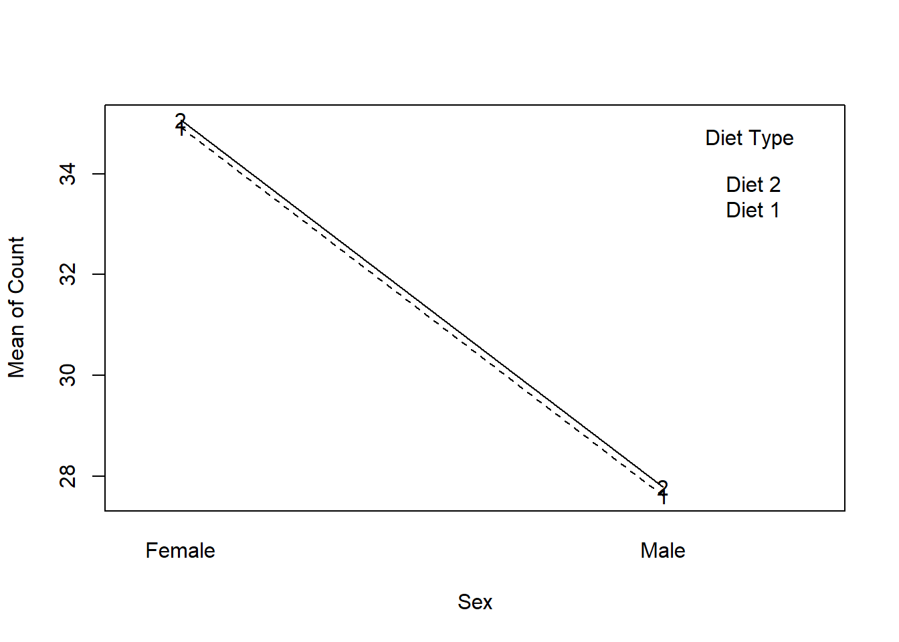
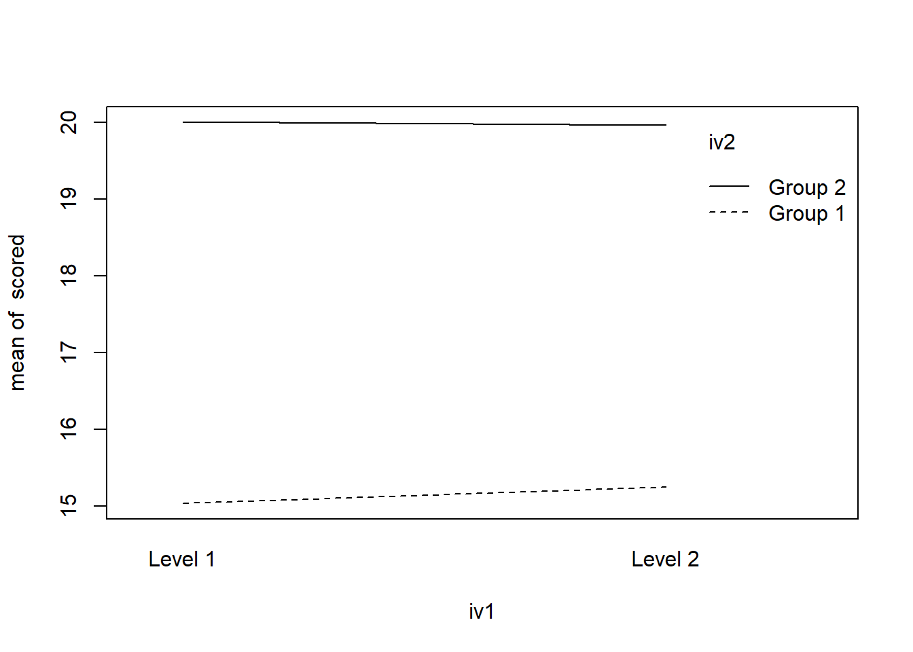
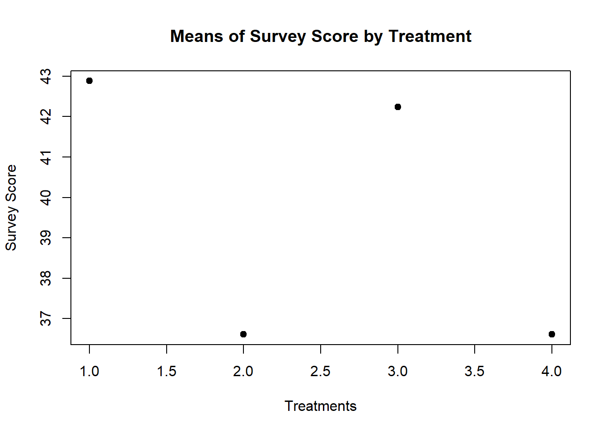

Lab 11
Two Factor Between Subject ANOVA
Recall the way that the ANOVA is formatted:
We have three independent variables, or conditions, control, treatment 1 and treatment 2. We have one dependent variable, some idea of “score”.
The ANOVA is analyzed through the use of the aov function. Remember to save the analysis as a model so you can use it later if you need to do any post-hoc tests/unplanned comparisons.
Df Sum Sq Mean Sq F value Pr(>F)
groups 2 1558.6 779.3 802.7 <2e-16 ***
Residuals 57 55.3 1.0
---
Signif. codes: 0 '***' 0.001 '**' 0.01 '*' 0.05 '.' 0.1 ' ' 1This produces:
a sum of squares and mean squares for the between subjects factor,
groups.It also produces a sum of squares and mean squares for the within subjects factor, also called the residuals, or the error.
From this we get one F-value.
What if we have two IV’s?
The current design will not help us too much so we need to move on to another design, the two factor between subjects ANOVA.
The set-up is mostly the same:
# Create sex variable
Sex = rep(c("Male","Female"),each = 30)
Diet = rep(c("Diet 1", "Diet 2"), 30)
Count = c(rnorm(30,28,2),rnorm(30,35,2))
twofact.df <- data.frame(Sex,Diet,Count)
twofact.df Sex Diet Count
1 Male Diet 1 27.21052
2 Male Diet 2 32.84692
3 Male Diet 1 29.21859
4 Male Diet 2 21.97352
5 Male Diet 1 28.89591
6 Male Diet 2 30.40958
7 Male Diet 1 27.93257
8 Male Diet 2 29.97841
9 Male Diet 1 26.99841
10 Male Diet 2 28.34294
11 Male Diet 1 28.84722
12 Male Diet 2 32.02985
13 Male Diet 1 30.11101
14 Male Diet 2 25.47370
15 Male Diet 1 26.47701
16 Male Diet 2 26.59372
17 Male Diet 1 31.19911
18 Male Diet 2 24.85055
19 Male Diet 1 26.67166
20 Male Diet 2 26.10828
21 Male Diet 1 23.96153
22 Male Diet 2 27.52581
23 Male Diet 1 30.43324
24 Male Diet 2 30.21951
25 Male Diet 1 24.89281
26 Male Diet 2 26.58385
27 Male Diet 1 24.50550
28 Male Diet 2 28.16369
29 Male Diet 1 26.89186
30 Male Diet 2 25.85160
31 Female Diet 1 37.97109
32 Female Diet 2 35.06345
33 Female Diet 1 37.08214
34 Female Diet 2 36.37917
35 Female Diet 1 36.44966
36 Female Diet 2 33.37515
37 Female Diet 1 37.22250
38 Female Diet 2 35.95934
39 Female Diet 1 33.68895
40 Female Diet 2 37.92897
41 Female Diet 1 35.34230
42 Female Diet 2 34.36147
43 Female Diet 1 33.65918
44 Female Diet 2 29.95844
45 Female Diet 1 31.24312
46 Female Diet 2 37.03697
47 Female Diet 1 33.39423
48 Female Diet 2 37.23043
49 Female Diet 1 35.48737
50 Female Diet 2 34.82487
51 Female Diet 1 33.01039
52 Female Diet 2 34.51271
53 Female Diet 1 34.42723
54 Female Diet 2 32.09866
55 Female Diet 1 36.89583
56 Female Diet 2 39.32543
57 Female Diet 1 31.69242
58 Female Diet 2 36.67778
59 Female Diet 1 36.30411
60 Female Diet 2 31.19938We can see that there are two levels of the independent variable Sex and two levels of the independent variable Diet and one dependent variable, count.
From this we will generate four sums of squares and four mean squares.
Sum of Squares for Factor A
Sum of Squares for Factor B
Sum of Squares for the interaction between A and B
Sum of Squares within, or Error, or residual.
Analyzing the data just uses one more term:
# Create the model
twofact.mod<-aov(Count~Sex*Diet,data = twofact.df)
# Calculate summary statistics
summary(twofact.mod) Df Sum Sq Mean Sq F value Pr(>F)
Sex 1 796.5 796.5 131.085 2.7e-16 ***
Diet 1 0.4 0.4 0.062 0.804
Sex:Diet 1 0.0 0.0 0.001 0.973
Residuals 56 340.2 6.1
---
Signif. codes: 0 '***' 0.001 '**' 0.01 '*' 0.05 '.' 0.1 ' ' 1Okay, so we have the anova table, but what do these results look like? From this data, we have three possibilities:
There is a main effect of Sex
There is a main effect of Diet
There is an interaction on Sex and Diet
In order to plot these relationships we use interaction.plot.
# Plot the interaction
interaction.plot(twofact.df$Sex,twofact.df$Diet, twofact.df$Count,
type = "o",
legend = TRUE,
xlab = "Sex",
ylab = "Mean of Count",
trace.label = "Diet Type")
Visualize No Interaction
# Create DV with variable means (15,20,30,40)
scored=rnorm(80,c(15,20,15,20))
# Create IV with two levels
iv1 = rep(c("Level 1","Level 2"),each=2,20)
# Create IV with two levels
iv2 = rep(c("Group 1","Group 2"),each=1,40)
# Combine
df <- data.frame(iv1,iv2,scored)
# Create Model and plot
summary(aov(scored~iv1*iv2,data = df)) Df Sum Sq Mean Sq F value Pr(>F)
iv1 1 0.2 0.2 0.148 0.702
iv2 1 469.2 469.2 435.549 <2e-16 ***
iv1:iv2 1 0.3 0.3 0.311 0.579
Residuals 76 81.9 1.1
---
Signif. codes: 0 '***' 0.001 '**' 0.01 '*' 0.05 '.' 0.1 ' ' 1interaction.plot(iv1,iv2,scored)
Two Factor Within Subjects ANOVA
In a Two Factor Between Subjects ANOVA, a particular participant is only ever in one condition or group or treatment level.
In a Two Factor Within Subjects ANOVA, a particular participant is in each condition or group or treatment level.
Setting this data up uses the same principles as we have learned before.
The one major difference in the set-up of the data is that there is now a variable of the subject itself.
When we had a between subjects design, each participant was unique, with a within design, each participant experiences every aspect of the experiment so it is reasonable that they may have an effect on the experiment itself.
Here is a sample dataset:
# For reproduction
set.seed(1234)
# Create subject vector
subject <- rep(1:10,4)
# Create IV
groups <- rep(c("pre","post","post 1", "post 2"),each = 10)
# Create DV
score <- rnorm(40,c(20,30,40,70))
# Create dataframe
within_anova <- data.frame(subject,groups,score)
within_anova subject groups score
1 1 pre 18.79293
2 2 pre 30.27743
3 3 pre 41.08444
4 4 pre 67.65430
5 5 pre 20.42912
6 6 pre 30.50606
7 7 pre 39.42526
8 8 pre 69.45337
9 9 pre 19.43555
10 10 pre 29.10996
11 1 post 39.52281
12 2 post 69.00161
13 3 post 19.22375
14 4 post 30.06446
15 5 post 40.95949
16 6 post 69.88971
17 7 post 19.48899
18 8 post 29.08880
19 9 post 39.16283
20 10 post 72.41584
21 1 post 1 20.13409
22 2 post 1 29.50931
23 3 post 1 39.55945
24 4 post 1 70.45959
25 5 post 1 19.30628
26 6 post 1 28.55180
27 7 post 1 40.57476
28 8 post 1 68.97634
29 9 post 1 19.98486
30 10 post 1 29.06405
31 1 post 2 41.10230
32 2 post 2 69.52441
33 3 post 2 19.29056
34 4 post 2 29.49874
35 5 post 2 38.37091
36 6 post 2 68.83238
37 7 post 2 17.81996
38 8 post 2 28.65901
39 9 post 2 39.70571
40 10 post 2 69.53410It would be helpful if we could see the means of each group, and plot those means.
For this, we will use a new function called tappy. This applies a specified function to whatever variables you provide in the arguments.
To get the means:
within_means <- tapply(within_anova$score,within_anova$groups,mean)
within_means post post 1 post 2 pre
42.88183 36.61205 42.23381 36.61684 To get the standard deviations:
within_sd <- tapply(within_anova$score,within_anova$groups,sd)
within_sd post post 1 post 2 pre
20.47817 18.96593 20.24584 18.49391 For now, it will only be important to use tapply in order to get the means.
Here is how we will plot the means:
plot(within_means,
pch=19,
xlab = "Treatments",
ylab = "Survey Score",
main = "Means of Survey Score by Treatment")
Performing the ANOVA requires two new terms: Error and the Subject factor.
The model that the ANOVA should resemble looks like this:
aov(DV ~ IV+ Error(Subjects))
From here it is important to note that your IV must be a factor.
With this in mind, you should run the function
levels(Grouping Variable) orfactor(Grouping Variable.)If the first function returns
NULL, use the second function.
Putting all of this together gives us the following:
Error: subject
Df Sum Sq Mean Sq F value Pr(>F)
Residuals 1 113.9 113.9
Error: Within
Df Sum Sq Mean Sq F value Pr(>F)
groups 3 355 118.4 0.303 0.823
Residuals 35 13665 390.4 When reporting these findings, you will ignore the subject variable and report the F-value for the grouping variable.
This particular finding should be reported as follows:
The results of a one-factor within subjects ANOVA, F(3,35) = .303, p >.05, revealed that there does not appear to be any effect of treatment on survey score.
Effect Sizes
Most times you will want to report effect sizes for your experiment. Effect sizes help to tell you how much of your effect is due to your manipulation.
In this example, there does not appear to be an effect at all, but we will compute an effect size anyways.
We will be using the \(\omega^2\) (omega-squared) effect size estimate.
The formula is as follows:
\[\omega^2 = \frac{SS_B-(k-1)(MS_W)}{SS_T-MS_W}\]
or
\[\omega^2 = \frac{SS_{Effect}-(k-1)(MS_{Within})}{SS_{Total}-MS_{Within}}\]
There is no R function that reports \(\omega^2\), so we will do this by hand.
\(\omega^2 = \frac{355-(4-1)(390.4)}{14020-390.4}\)
\(\omega^2 = -.059\)
This effect size is negative because our effect was not significant, but it is still important for you to see how to get these numbers!